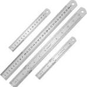

A. Steel Rule
These are made up of stainless steel and are available in many sizes ranging from 1/2 ft. to 2 ft. These are marked in inches or millimetres. All the faces are machined true. The edges of steel rule should be protected from rough handling.